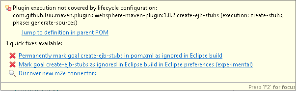

Welcome to websphere-maven-plugin for Apache Maven 2
This plugin is developed against Websphere 8.5.
- websphere-maven-plugin - actual maven plugin to be used within maven pom
- websphere-m2e-connector - eclipse plugin to integrate the stub creation process into eclipse projects
websphere-maven-plugin
It generate the _XXX_Stub.class file required in order for stand alone java application to call Remote EJB on Websphere Application Server.
Prerequisites
- You must have IBM Websphere installed (This is tested against WAS 8.5, but may work with other versions).
More specifically, this plugin used the createEJBStubs.(bat|sh) script that comes with the WAS binary.
By default, this plugin expects the createEJBStub script to be at:
- \IBM\WebSphere\AppServer\bin (Windows) - The drive is omitted. It will default to whatever drive the plugin is ran in.
- /IBM/WebSphere/AppServer/bin (*NIX)
Available goals
- create-ejb-stubs
create-ejb-stubs usage
Sample configuration
<plugin>
<groupId>com.github.lsiu.maven.plugins</groupId>
<artifactId>websphere-maven-plugin</artifactId>
<version>1.0.2</version>
<configuration>
<!-- list of interface/classes to create ejb stubs -->
<classes>
<class>java.lang.Appendable</class>
<class>java.lang.Readable</class>
</classes>
<!-- following are optional -->
<websphereHome/> <!-- default to /IBM/WebSphere/AppServer -->
<outputDirectory/> <!-- default to target/classes -->
<classpath/> <!-- default to test scope classpath -->
</configuration>
</plugin>
Usage
mvn websphere:create-ejb-stubs
websphere-m2e-connector
This m2e connector is to manage integration of websphere-maven-plugin with m2e and eclipse
m2e connector update site
http://lsiu.github.io/websphere-maven-plugin/update-siteOverview
After this m2e connector is installed. It address the plugin "Plugin execution not covered by lifecycle configuration" error caused by the com.github.lsiu.maven.plugins:websphere-maven-plugin.
